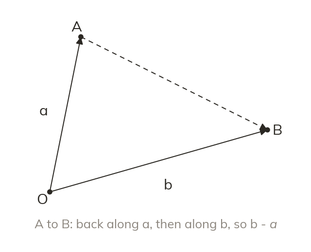
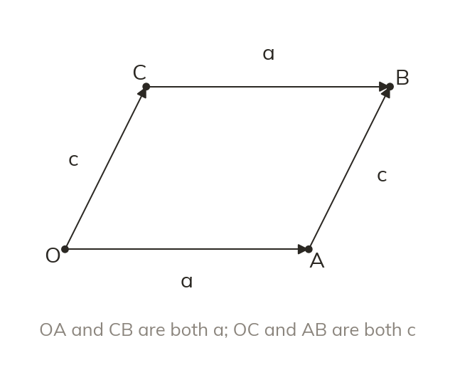
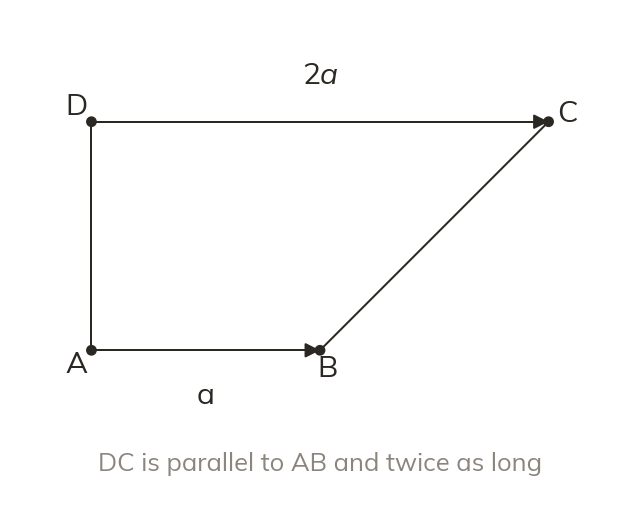
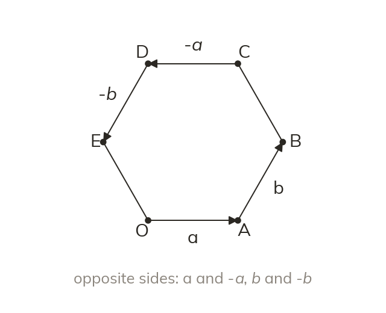

A route of known steps
Any vector in a diagram is a route along known vectors. A step against an arrow takes a minus sign.
In geometry problems the vectors come as letters, a and b, not numbers. Today we reach any point in a shape by a route along known vectors.
Work down the page at your own pace. Write every answer in your book first, then click to check it.
Read each card, then follow the worked examples one step at a time.

Any vector in a diagram is a route along known vectors. A step against an arrow takes a minus sign.

In a parallelogram, opposite sides are equal vectors. So a route can use whichever side is known.
Pick an answer. If it's wrong, the feedback tells you which mistake it was.
Read each card, then follow the worked examples one step at a time.

A side parallel to a and twice as long is 2a. The diagram's ratio of lengths gives the multiplier.

Opposite sides of a regular hexagon are parallel and equal. So two letters describe all six sides.
Pick an answer. If it's wrong, the feedback tells you which mistake it was.
Finished? Next lesson: 11H.8.5 Midpoints and Ratios on Lines.
Log in, then search for a code to practise that skill.
Videos, worksheets and more on each part of this lesson.